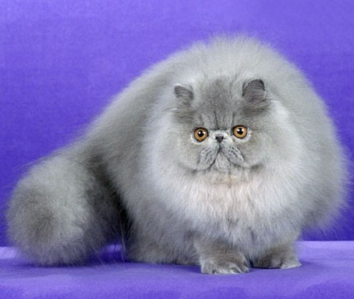

Персидская порода кошек

Персидская кошка — порода длинношёрстных кошек, одна из старейших и самых популярных в мире.
Персидские кошки не могут жить вне дома. В целом кошки этой породы отличаются ласковым характером и полным доверием к человеку. В семье часто выбирают хозяина, которого любят и уважают.
Очень спокойны. Их голос редко слышится. Персы спокойно и настойчиво просят обратить внимание на них: они сидят около хозяина и пристально глядят ему в лицо. Они сопровождают всех домашних из комнаты в комнату, не боятся детей.